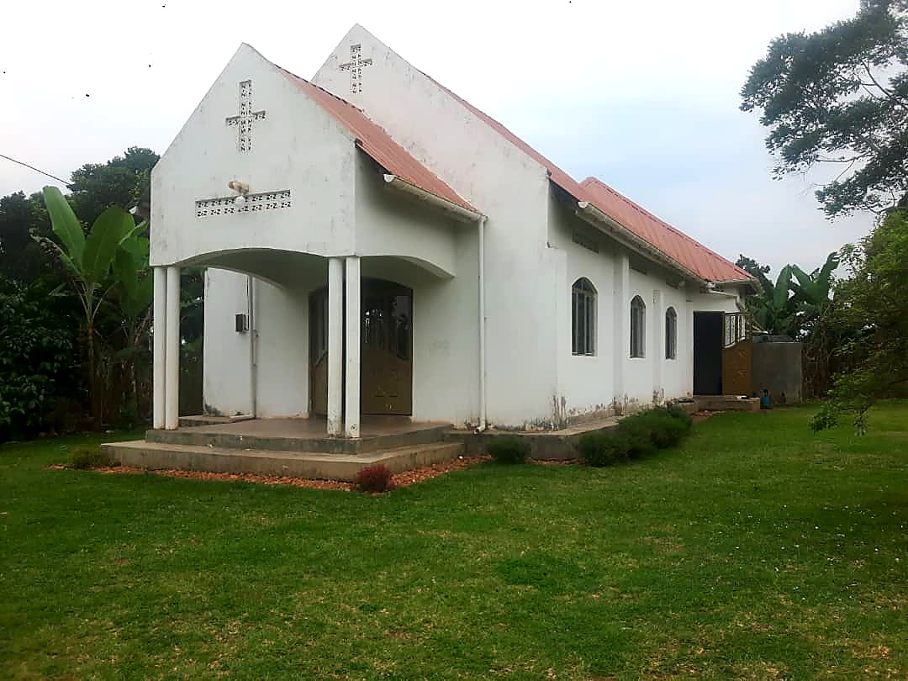

Completed
Church Building
The church building in Kasozi is complete and thats where some of the kids/children we give a hand go for prayers and some other members of the community. They had started using the church during week days and then we decided to come up with construction of a pre-school which is now an on-going project that you can actually contribute towards. Thank you